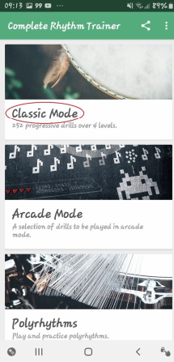
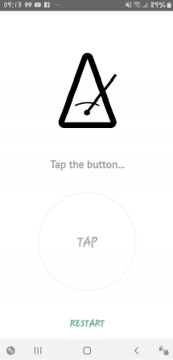
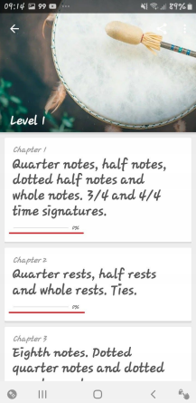
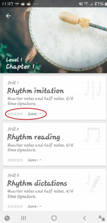
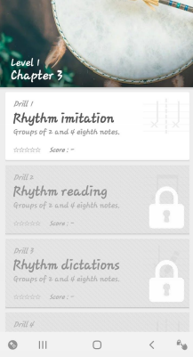

A primeira habilidade a ser dominada deve ser a leitura rítmica.
Não só entender o valor das figuras rítmicas é importante, como também internalizá-las é essencial. Para essa finalidade, utilizaremos o app Complete Rhythm Trainer
COMO USAR O APLICATIVO
 Essa é a tela inicial do app. Nós aqui utilizaremos o “Classic Mode”
 Em algum momento essa tela com o símbolo de um metrônomo aparecerá.
Isso significa que a calibração do aplicativo está sendo solicitada.
Quando a palavra TAP aparecer na tela, toque dentro do círculo no ritmo do metrônomo (ou seja, toque na tela ao mesmo tempo que ouvir os estalos).
 Os níveis são divididos em capítulos.
É recomendável que você consiga deixar a barrinha sublinhada em vermelho em 100% para poder passar para o próximo capítulo.
 Os capítulos são divididos em treinos (Drills).
Para passar para o próximo treino o ideal é que se obtenha 5 estrelas no anterior.
Em Rhythm imitation ouça atentamente o ritmo tocado e depois imite-o tocando na tela.
Já em Rhythm reading você terá que tocar o que está escrito na tela sem tê-lo ouvido antes.
Por fim em Rhythm dictations você ouvirá o ritmo e depois escreverá as figuras rítmicas correspondentes.
 Infelizmente o modo gratuito do app tem um limite.
Todos os capítulos com um símbolo de cadeado só podem ser acessados na versão paga. De qualquer forma isso não é um problema, já que o que ele ensina já é o suficiente para o nosso caso.